Snakes of United States
200 snake species are recorded in the United States in SnakeList: 32 venomous and 168 non-venomous, from 9 families.
- 200species
- 32venomous
- 168non-venomous
- 9families
These totals count the snakes SnakeList records as living in the United States, including 14 extinct or fossil species. The 2 species brought here by people (introduced, not native) are listed separately below and are not in the total. Territories that SnakeList lists as places of their own (Puerto Rico, Guam, American Samoa, US Virgin Islands, Northern Mariana Islands) have their own pages and are not counted here. A species counts if it is recorded anywhere in the country, so not every snake lives in every region.
Species
Showing 200 species
- No photo yetAntilles RacerAlsophis antillensis
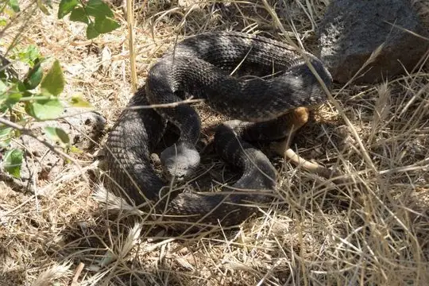
Arizona Black RattlesnakeCrotalus cerberus Atlantic Central American MilksnakeLampropeltis polyzona
Atlantic Central American MilksnakeLampropeltis polyzona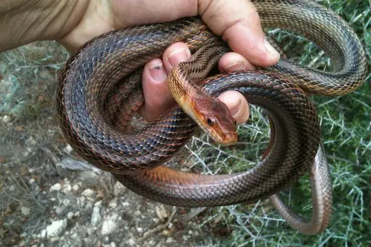
Baird's Rat SnakePantherophis bairdi Baja California CoachwhipMasticophis fuliginosus
Baja California CoachwhipMasticophis fuliginosus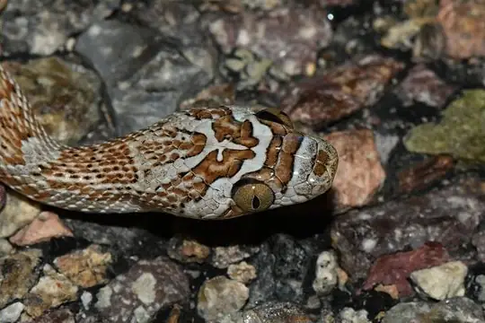
Baja California Lyre SnakeTrimorphodon lyrophanes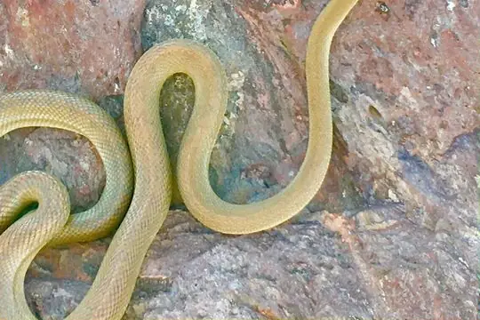
Baja California Rat SnakeBogertophis rosaliae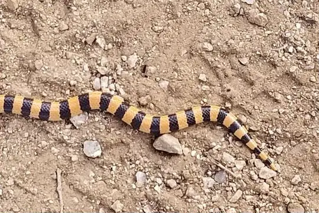
Banded Sand Snake (cincta)Sonora cincta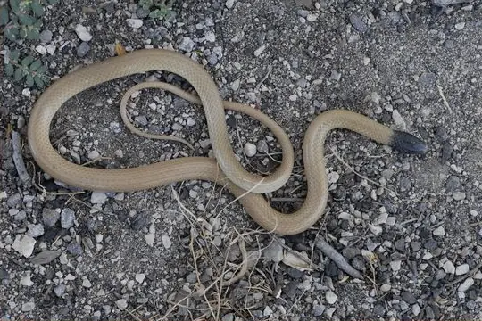
Big Bend Blackhead SnakeTantilla cucullata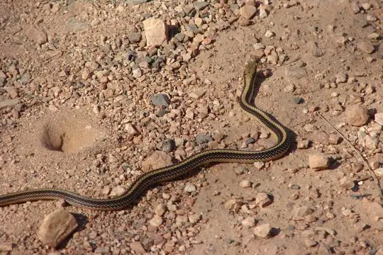
Big Bend Patchnose SnakeSalvadora deserticola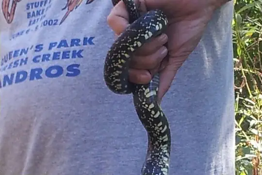
Black KingsnakeLampropeltis nigra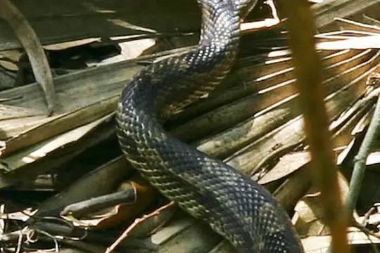
Black Rat SnakePantherophis obsoletus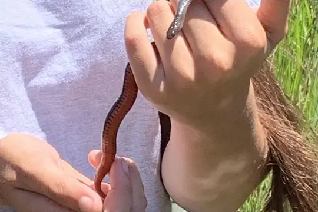
Black SwampsnakeLiodytes pygaea Black-striped Snake (imperialis)Coniophanes imperialis
Black-striped Snake (imperialis)Coniophanes imperialis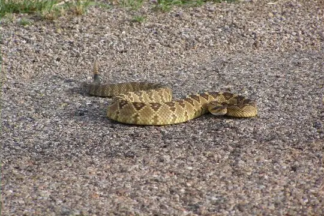
Black-tailed RattlesnakeCrotalus molossus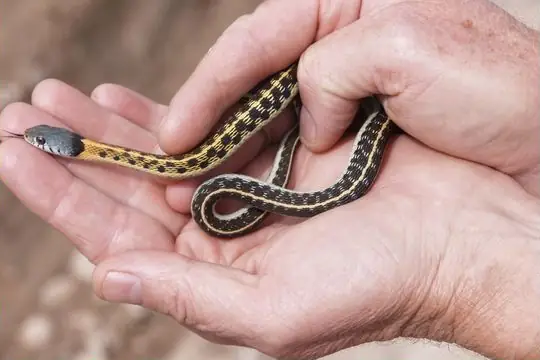
Blackneck Garter SnakeThamnophis cyrtopsis Brahminy BlindsnakeIndotyphlops braminus
Brahminy BlindsnakeIndotyphlops braminus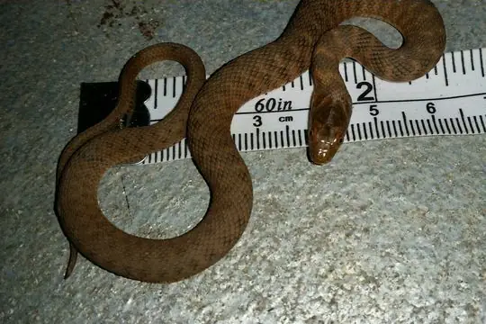
Brazos Water SnakeNerodia harteri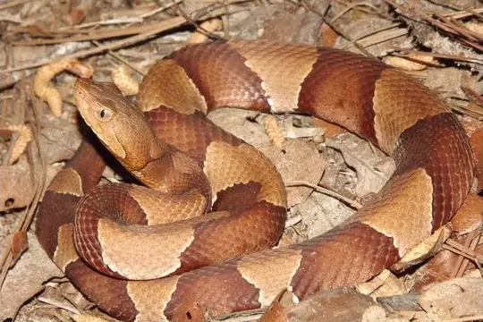
Broad-banded CopperheadAgkistrodon laticinctus Brown SnakeStoreria dekayi
Brown SnakeStoreria dekayi Brown VinesnakeOxybelis aeneus
Brown VinesnakeOxybelis aeneus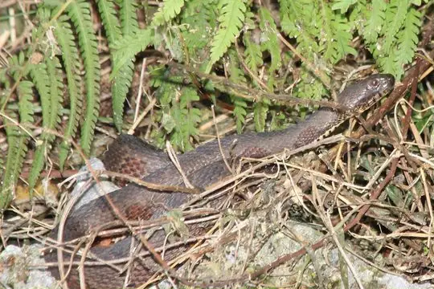
Brown Water Snake (taxispilota)Nerodia taxispilota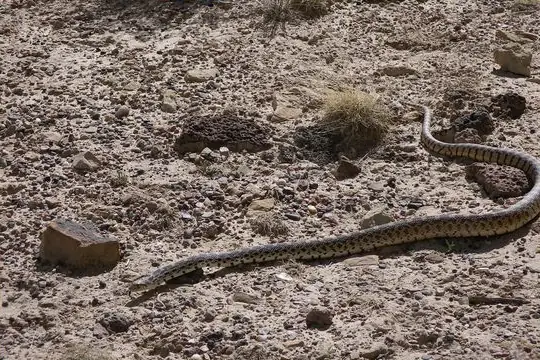
BullsnakePituophis catenifer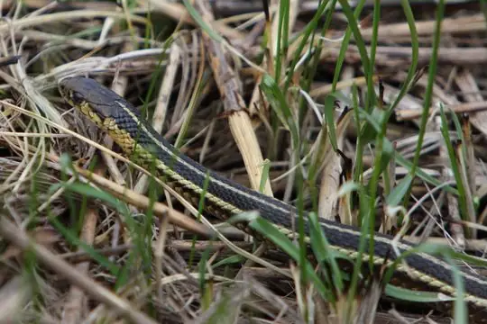
Butler's Garter SnakeThamnophis butleri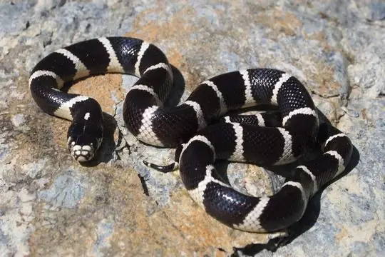
California KingsnakeLampropeltis californiae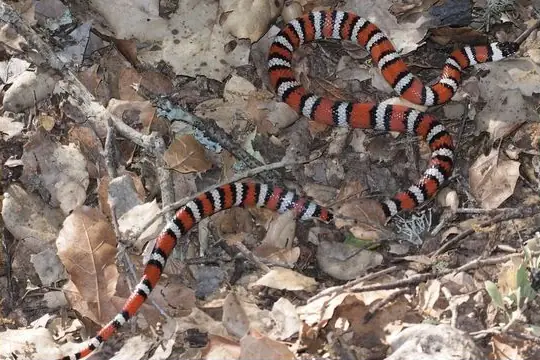
California Mountain KingsnakeLampropeltis zonata Cat-eyed Snake (septentrionalis)Leptodeira septentrionalis
Cat-eyed Snake (septentrionalis)Leptodeira septentrionalis Central American Indigo SnakeDrymarchon melanurus
Central American Indigo SnakeDrymarchon melanurus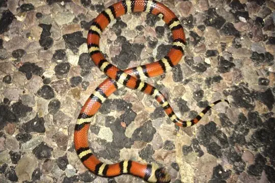
Central Plains MilksnakeLampropeltis gentilis Checkered Garter SnakeThamnophis marcianus
Checkered Garter SnakeThamnophis marcianus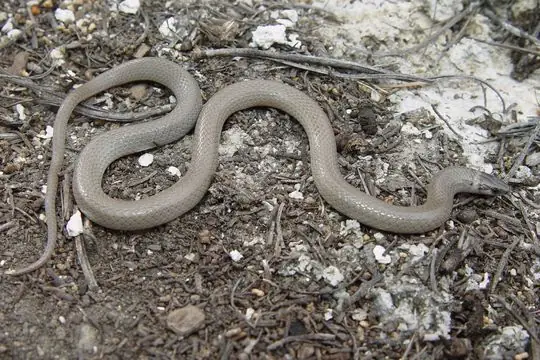
Chihuahuan Blackhead SnakeTantilla wilcoxi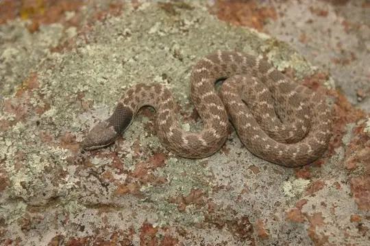
Chihuahuan NightsnakeHypsiglena jani CoachwhipMasticophis flagellum
CoachwhipMasticophis flagellum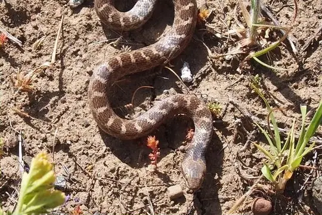
Coast NightsnakeHypsiglena ochrorhynchus- No photo yetColorado Desert Shovelnose SnakeChionactis annulata
 Common GartersnakeThamnophis sirtalis
Common GartersnakeThamnophis sirtalis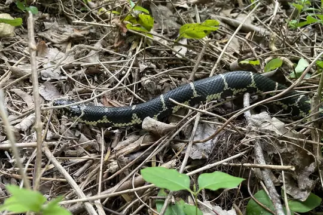
Common KingsnakeLampropeltis getula Common WatersnakeNerodia sipedon
Common WatersnakeNerodia sipedon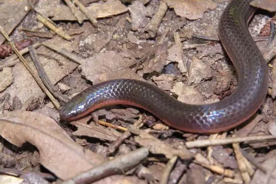
Common WormsnakeCarphophis amoenus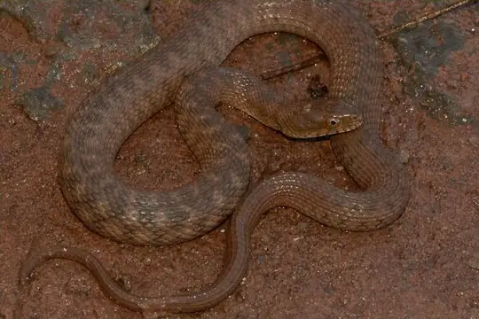
Concho Water SnakeNerodia paucimaculata CopperheadAgkistrodon contortrix
CopperheadAgkistrodon contortrix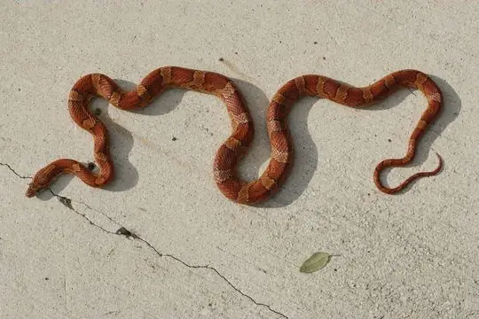
Corn SnakePantherophis guttatus Costal Lyre SnakeTrimorphodon biscutatus
Costal Lyre SnakeTrimorphodon biscutatus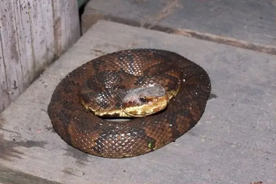
CottonmouthAgkistrodon piscivorus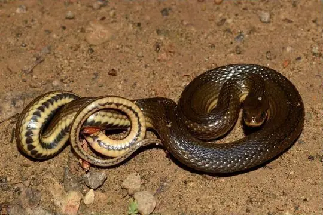
Crayfish SnakeLiodytes rigida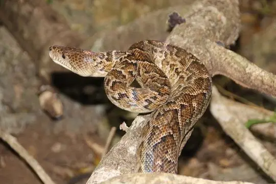
Cuban BoaChilabothrus angulifer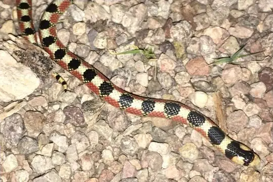
Desert Hooknose SnakeGyalopion quadrangulare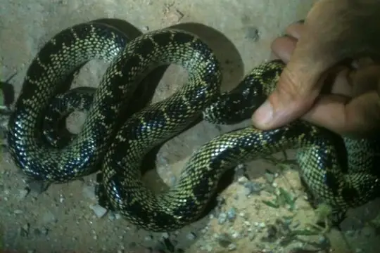
Desert KingsnakeLampropeltis splendida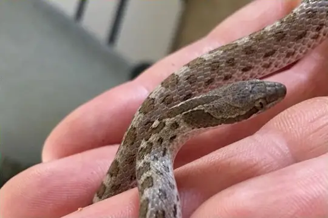
Desert NightsnakeHypsiglena chlorophaea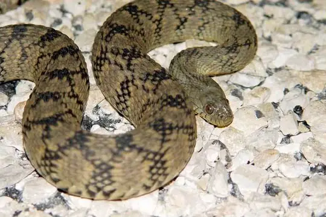
Diamondback Water SnakeNerodia rhombifer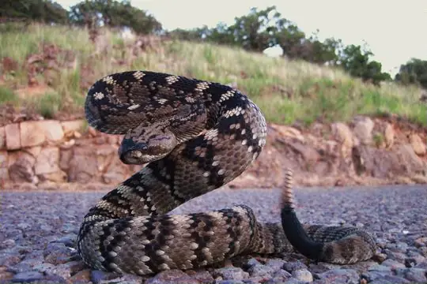
Eastern Black-tailed RattlesnakeCrotalus ornatus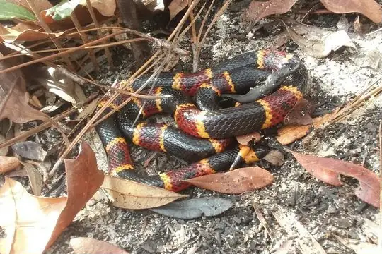
Eastern Coral SnakeMicrurus fulvius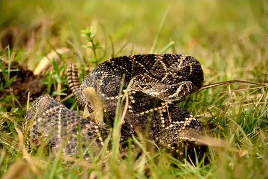
Eastern Diamondback RattlesnakeCrotalus adamanteus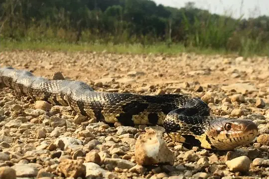
Eastern Fox SnakePantherophis vulpinus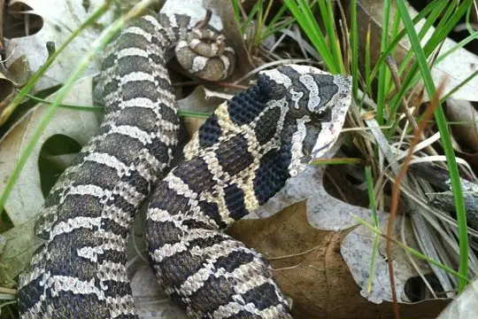
Eastern Hognose SnakeHeterodon platirhinos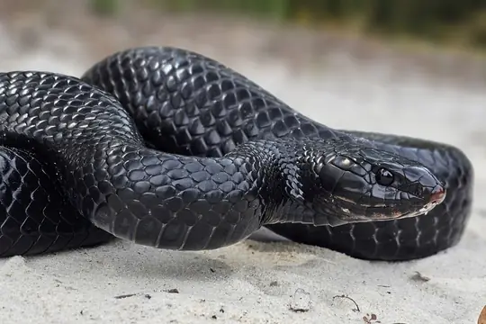
Eastern Indigo SnakeDrymarchon couperi Eastern Rat SnakePantherophis alleghaniensis
Eastern Rat SnakePantherophis alleghaniensis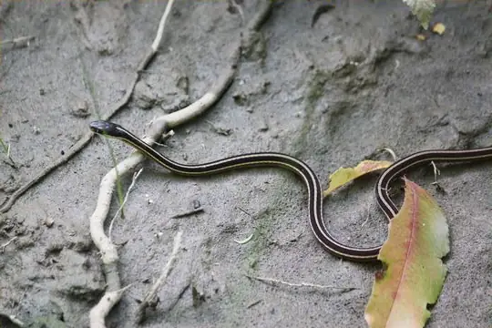
Eastern RibbonsnakeThamnophis saurita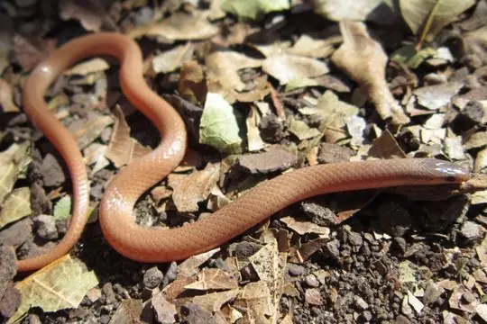
Flathead SnakeTantilla gracilis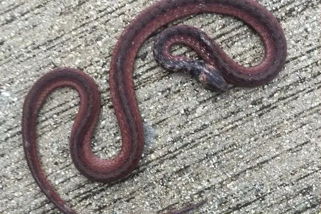
Florida Brown SnakeStoreria victa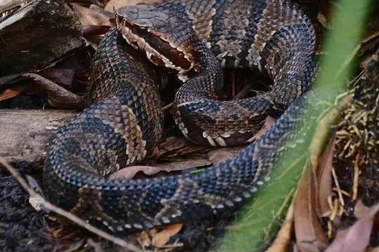
Florida CottonmouthAgkistrodon conanti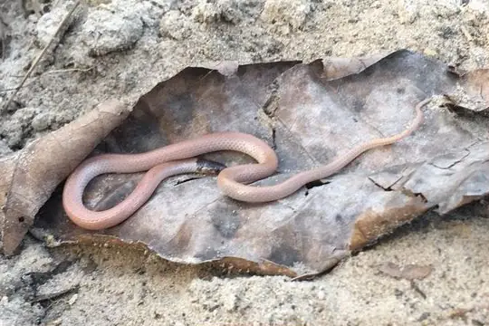
Florida Crowned SnakeTantilla relicta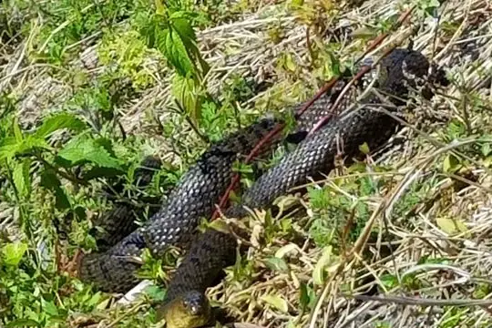
Florida Green WatersnakeNerodia floridana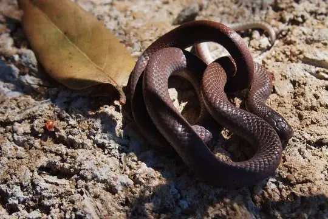
Forest Sharp-tailed SnakeContia longicauda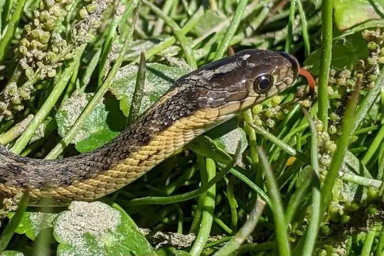
Giant Garter SnakeThamnophis gigas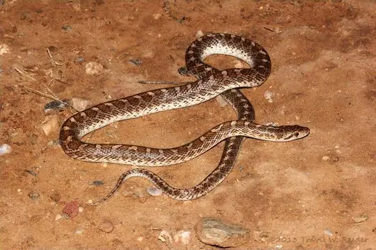
Glossy SnakeArizona elegans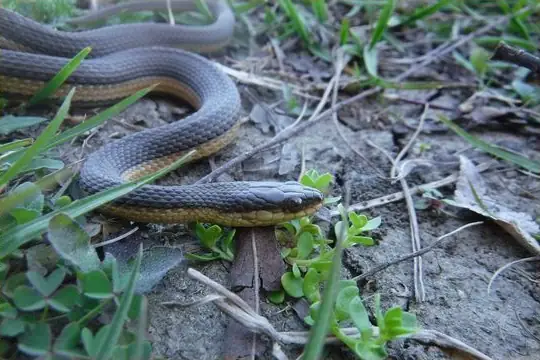
Graham's Crayfish SnakeRegina grahamii- Great Basin RattlesnakeCrotalus lutosus
- Great Plains Rat SnakePantherophis emoryi
 Green Rat Snake (triaspis)Senticolis triaspis
Green Rat Snake (triaspis)Senticolis triaspis- Ground Snake (exiguus)Magliophis exiguus
- Ground Snake (semiannulata)Sonora semiannulata
- Kirtland's SnakeClonophis kirtlandii
 Lined Ground SnakeLygophis lineatus
Lined Ground SnakeLygophis lineatus- Lined SnakeTropidoclonion lineatum
- Longnose SnakeRhinocheilus lecontei
- Louisiana Pine SnakePituophis ruthveni
- MassasaugaSistrurus catenatus
- Mexican Black-headed SnakeTantilla atriceps
- Mexican Garter SnakeThamnophis eques
- Mexican Hog-nose SnakeHeterodon kennerlyi
- Mexican Hook-nosed SnakeFicimia olivacea
- Mexican Hooknose SnakeFicimia streckeri
- Midget Faded RattlesnakeCrotalus concolor
- Milk SnakeLampropeltis triangulum
- Mississippi Green Water SnakeNerodia cyclopion
- miter snakeSonora episcopa
- Mojave RattlesnakeCrotalus scutulatus
- Mole snakeLampropeltis rhombomaculata
- No photo yetMona BlindsnakeAntillotyphlops monensis
- Mountain Patchnose SnakeSalvadora grahamiae
- Mud Snake (abacura)Farancia abacura
- Narrowhead WatersnakeThamnophis rufipunctatus
- No photo yetNavassa Dwarf BoaTropidophis bucculentus
- No photo yetNew Mexico ThreadsnakeRena dissecta
- Night SnakeHypsiglena torquata
- Northern Rubber BoaCharina bottae
- Northern Three-lined BoaLichanura orcutti
- Northwestern Garter SnakeThamnophis ordinoides
- Panamint RattlesnakeCrotalus stephensi
- Pima Leafnose SnakePhyllorhynchus browni
- Pine SnakePituophis melanoleucus
- Pine Woods SnakeRhadinaea flavilata
 Plainbelly Water SnakeNerodia erythrogaster
Plainbelly Water SnakeNerodia erythrogaster- Plains Blackhead SnakeTantilla nigriceps
- Plains Garter SnakeThamnophis radix
- Prairie KingsnakeLampropeltis calligaster
- Prairie RattlesnakeCrotalus viridis
- Puerto Rican RacerBorikenophis portoricensis
- Pygmy RattlesnakeSistrurus miliarius
- Queen SnakeRegina septemvittata
- RacerColuber constrictor
- Rainbow SnakeFarancia erytrogramma
- Red Black-headed SnakeTantilla rubra
- Red Diamond RattlesnakeCrotalus ruber
 Redbelly SnakeStoreria occipitomaculata
Redbelly SnakeStoreria occipitomaculata- Resplendent Shovel-nosed SnakeSonora annulata
- Ridge-nosed RattlesnakeCrotalus willardi
- Rim Rock Crowned SnakeTantilla oolitica
 Ringneck SnakeDiadophis punctatus
Ringneck SnakeDiadophis punctatus- Rock RattlesnakeCrotalus lepidus
- Rosy BoaLichanura trivirgata
- No photo yetRough EarthsnakeHaldea striatula
- Rough GreensnakeOpheodrys aestivus
- Salt Marsh SnakeNerodia clarkii
- Sand Snake (straminea)Sonora straminea
- Santa Cruz Garter SnakeThamnophis atratus
- Scarlet KingsnakeLampropeltis elapsoides
- Scarlet SnakeCemophora coccinea
 Schott's WhipsnakeMasticophis schotti
Schott's WhipsnakeMasticophis schotti- Sharptail SnakeContia tenuis
- Short-tailed SnakeLampropeltis extenuata
- Shorthead Garter SnakeThamnophis brachystoma
- SidewinderCrotalus cerastes
- Slowinski's CornsnakePantherophis slowinskii
- Smith's Black-headed SnakeTantilla hobartsmithi
- Smooth Earth SnakeVirginia valeriae
- Smooth Green SnakeOpheodrys vernalis
- Sonoran CoralsnakeMicruroides euryxanthus
- Sonoran Lyre SnakeTrimorphodon lambda
- Sonoran Mountain KingsnakeLampropeltis pyromelana
- Sonoran Shovelnose SnakeSonora palarostris
 Sonoran WhipsnakeMasticophis bilineatus
Sonoran WhipsnakeMasticophis bilineatus- South Florida Mole KingsnakeLampropeltis occipitolineata
- Southeastern Crowned SnakeTantilla coronata
- Southern Hognose SnakeHeterodon simus
- Southern Pacific RattlesnakeCrotalus helleri
- Southern Rubber BoaCharina umbratica
- Southern Water SnakeNerodia fasciata
- Southwestern Speckled RattlesnakeCrotalus pyrrhus
- Speckled KingsnakeLampropeltis holbrooki
 Speckled RacerDrymobius margaritiferus
Speckled RacerDrymobius margaritiferus- Speckled RattlesnakeCrotalus mitchellii
- Spotted Leafnose SnakePhyllorhynchus decurtatus
- Striped Crayfish SnakeLiodytes alleni
 Striped RacerMasticophis lateralis
Striped RacerMasticophis lateralis Striped WhipsnakeMasticophis taeniatus
Striped WhipsnakeMasticophis taeniatus- Taylor’s Ground SnakeSonora taylori
- Texas Blind SnakeRena dulcis
- Texas Coral SnakeMicrurus tener
- Texas Lyre SnakeTrimorphodon vilkinsonii
- Texas Patchnose SnakeSalvadora lineata
- Texas Scarlet SnakeCemophora lineri
- Thornscrub Vine SnakeOxybelis microphthalmus
- Tiger RattlesnakeCrotalus tigris
 Timber RattlesnakeCrotalus horridus
Timber RattlesnakeCrotalus horridus- Trans-pecos RatsnakeBogertophis subocularis
- Trans-Pecos ThreadsnakeRena segrega
- Twin-spotted RattlesnakeCrotalus pricei
- Two-striped Garter SnakeThamnophis hammondii
- Western Aquatic Garter SnakeThamnophis couchii
- Western Blackhead SnakeTantilla planiceps
- Western Diamond-backed RattlesnakeCrotalus atrox
- Western FoxsnakePantherophis ramspotti
- Western Hognose SnakeHeterodon nasicus
- Western Hooknose SnakeGyalopion canum
- Western MassasaugaSistrurus tergeminus
- Western Patchnose SnakeSalvadora hexalepis
- Western RattlesnakeCrotalus oreganus
- Western RibbonsnakeThamnophis proximus
- Western Shovelnose SnakeSonora occipitalis
- Western Terrestrial Garter SnakeThamnophis elegans
- Western ThreadsnakeRena humilis
- Western Worm SnakeCarphophis vermis
- Yaqui Black-headed SnakeTantilla yaquia
- Yellow-bellied Sea SnakeHydrophis platurus
- Known from fossilsAmeiseophis robinsoni
- Known from fossilsAnilioides nebraskensis
- Known from fossilsBoavus idelmani
- Known from fossilsConiophis precedens
- Known from fossilsDiablophis gilmorei
- Known from fossilsDiadophis elinorae
- Known from fossilsDinodon horridus
- Known from fossilsElaphe nebraskensis
- Known from fossilsHeterodon plionasicus
- Known from fossilsLampropeltis similis
- Known from fossilsNatrix hillmani
- Known from fossilsPaleoheterodon tiheni
- Known from fossilsPterosphenus schucherti
- Known from fossilsTotlandophis americanus
No snakes in United States match.
Introduced to United States
Not native here: SnakeList records these snakes as brought to United States by people.

United States’s snakes in numbers
- Families: Colubridae 150, Viperidae 28, Boidae 8, Elapidae 4, Leptotyphlopidae 4, Typhlopidae 2, Palaeophiidae 1, Parviraptoridae 1, Tropidophiidae 1.
- 82 are recorded in no other country in SnakeList: Antilles Racer, Baird's Rat Snake, Black Kingsnake, Black Rat Snake, Black Swampsnake, Brazos Water Snake, Broad-banded Copperhead, Brown Water Snake (taxispilota), Central Plains Milksnake, Common Kingsnake, Common Wormsnake, Concho Water Snake and 70 more.
- 14 are extinct or known only from fossils.
States
The states where SnakeList records snakes, with how many species each has. Each page has its families, venomous snakes, the species found only there, its cities and neighbours.
- Alabama 40 species
- Alaska 1 species
- American Samoa 2 species
- Arizona 56 species
- Arkansas 29 species
- California 47 species
- Colorado 26 species
- Commonwealth of the Northern Mariana Islands 1 species
- Connecticut 10 species
- Delaware 15 species
- District of Columbia 12 species
- Florida 44 species
- Georgia 42 species
- Guam 2 species
- Hawaii 2 species
- Idaho 9 species
- Illinois 32 species
- Indiana 26 species
- Iowa 21 species
- Kansas 35 species
- Kentucky 23 species
- Louisiana 42 species
- Maine 6 species
- Maryland 18 species
- Massachusetts 10 species
- Michigan 12 species
- Minnesota 11 species
- Mississippi 34 species
- Missouri 33 species
- Montana 7 species
- Nebraska 26 species
- Nevada 26 species
- New Hampshire 7 species
- New Jersey 16 species
- New Mexico 48 species
- New York 12 species
- North Carolina 33 species
- North Dakota 6 species
- Ohio 18 species
- Oklahoma 39 species
- Oregon 14 species
- Pennsylvania 14 species
- Puerto Rico 8 species
- Rhode Island 9 species
- South Carolina 36 species
- South Dakota 10 species
- Tennessee 29 species
- Texas 80 species
- United States Virgin Islands 4 species
- Utah 24 species
- Vermont 7 species
- Virginia 26 species
- Washington 8 species
- West Virginia 11 species
- Wisconsin 15 species
- Wyoming 9 species
No place matches that.
Cities
Its biggest cities, biggest first. Snakes are recorded by state, not by city, so each city page shows the snakes of the state it is in.
- New York City New York
- Los Angeles California
- Chicago Illinois
- Houston Texas
- Philadelphia Pennsylvania
- Phoenix Arizona
- San Antonio Texas
- San Diego California
- Dallas Texas
- San Jose California
- Austin Texas
- Jacksonville Florida
- San Francisco California
- Columbus Ohio
- Fort Worth Texas
- Indianapolis Indiana
- Charlotte North Carolina
- Seattle Washington
- Denver Colorado
- El Paso Texas
- Detroit Michigan
- Boston Massachusetts
- Memphis Tennessee
- Portland Oregon
- Oklahoma City Oklahoma
No place matches that.